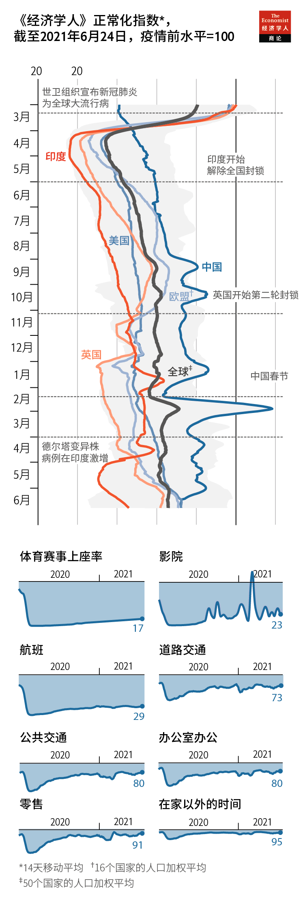

2021-07-14T15:37:16+00:00
回到未来
本刊指数显示疫情前常态恢复了一半
相比个人选择的行为，受政府严格管控的活动受到的影响更大
查看我们的交互式正常化指数，可以追踪哪些国家正在回归疫情前的生活状态
在第一次世界大战和1918至1920年的大流感刚刚过去后，高喊“恢复常态”承诺的沃伦·哈定（Warren Harding）在1920年当选美国总统。一个世纪过去了，他当年的目标如今听来前所未有地动人。不过令人沮丧的是，它看起来也很难实现。
理论上说，疫苗应该能结束新冠疫情。已经有三分之一的12岁及以上人口至少接种了一剂疫苗。然而，很多地方的疫情正在反弹。澳大利亚、孟加拉国和泰国都实施了新的限制措施。智利12岁以上人口已经有77%接种了一剂疫苗，却仍在上个月封锁了首都。
这样的情况并没有让人们对疫苗的有效性产生怀疑。在以色列等大多数成年人都接种了两剂辉瑞疫苗的国家，现在的生活和2019年差不多。但在其他地方，即使疫情终于已经能看到头了，距离回归正常生活却还相去甚远。有些国家更接近恢复正常，并不完全是因为它们的疫苗接种率更高。
新冠肺炎改变了人们生活的太多面相，不可尽数。然而，但凡要评估它的影响消退了多少，都需要一个衡量正常状态的指标。为此我们设计了一个正常化指数，它追踪三类活动。首先是旅行，具体划分为道路、航空和公共交通。其次是休闲时间，分为在家以外的时间、影院收入和现场观看体育赛事。最后是以商店和办公室人流量来估算的商业活动。
针对每个变量，我们采集了50个国家的日或周数据。这些国家占世界人口的76%、GDP的90%。首先，估算出每个变量比新冠疫情前状况的变化；再把每个大类中的各项变化取平均值；再把各类别结果取平均值。全球数值经各国人口加权得出。
在计算指数时，我们把疫情前常态设定为100。2020年3月，当世卫组织宣布新冠肺炎为全球大流行病时，中国已经采取了封锁措施，这将该指数拉低到80。随着疫情的蔓延，它一度达到35的低点。自去年7月以来，该指数一直在60左右徘徊。目前为66，这意味着新冠肺炎造成的破坏只有一半得到了恢复。
目前大多数西方国家都在这个平均数附近。美国为73，欧盟71，澳大利亚70，英国62。其他地方的差异较大。香港和新西兰最高，分别为96和88，它们的生活也都几乎完全恢复了正常。反差鲜明的是，马来西亚的这一数值自4月以来从55跌至27。
在该指数所列的八项活动中，有三项在去年3月被多国法令所禁止，分别是去电影院和体育场馆，以及航空旅行。目前，这三项活动仍比疫情前的基准低70%至85%。
尽管现在许多电影院都开放了，但电影公司已经开始直接向流媒体服务商出售内容。除了今年2月中国春节档的观影热潮让周票房收入增长了3600%，该行业的收入一直徘徊在2019年水平的20%至40%之间。
体育赛事和航空旅行的情况要乐观一些。由于体育赛事设定了观众上限，观众人数保持在疫情前基准的20%左右。同样，如今在飞的航班数量只有2019年的30%，这主要是旅行禁令和隔离规定所致。然而，美国是个令人鼓舞的例外。由于民众对国内航班的强劲需求，以及大规模疫苗接种后无需再设置观众上限，美国的航空出行和棒球观赛人数分别达到了2019年的70%和90%。
虽然很多国家的政府要求人们待在家里，但这样的规定很难执行。去年4月，尽管全世界一半人口受到这类命令的约束，但全球平均在外时间仅下降了15%。如今遵守相关规定的比率同样看上去很低：按规定约有14%的人不准外出，但人们不在家的时间仅比2019年的基准低5%。
我们指数中的其余几个变量主要取决于个人或公司的选择。它们全都已经基本恢复正常水平，反映出人们正在政府允许的范围内尽可能地夺回正常生活。在疫情期间通常仍然保持运营的城市公共交通目前已达到疫情前水平的80%。驾车出行达73%；零售商店的客流量为91%；办公室出勤率为80%。由于许多员工可以远程办公，这个出勤率的缺口更可能是由远程办公而不是失业造成的。
国与国之间的指数分值差异很大，最低是去年4月秘鲁的16，最高是上个月越南的97。不同国家、不同时期之间的大部分差异都可以用几个模式来解释。
合乎逻辑的是，疫情最严重的地方生活往往最不正常。在其他因素不变的情况下，一个国家在前一个月的官方统计新冠死亡人数每增加一个标准差，当月正常化指数就下降四个点。同样，封锁规定每收紧一个标准差，正常化指数就下降五个点。
不过，新冠肺炎的实际传播状况需要一段时间才会反映在人们的行为上。正常化指数更多追踪的是上月官方公布的死亡人数，而非当前病例数，而上月官方死亡人数反映的可能是60天前的感染情况。此外，正常化指数与未统计的病例数之间也有相关性（虽然很弱），后者是通过诸如检测呈阳性的比例、因各种原因导致的全部死亡人数的变化等间接估算出来的。而尽管疫苗能提高正常化水平，但这只发生在它经过足够的时间来减少死亡之后。大多数国家目前仍然处于非正常状态，因为新冠肺炎在本地爆发时，获得充分保护的民众还不足够多。
正常化指数也受到一些与疫情无关的因素的影响。总体而言，亚洲国家不如你以为的那般正常。有违直觉的是，在公民自由度高的国家，行为的改变要多于在其他方面类似但自由度较低的国家。如果这些国家的民众异常信任自己的领导人，或者如果他们认为应该更关心自己同胞的福祉，这就说得通了。在较富裕的国家，很多人可以居家办公，它们的正常化水平也低于较贫穷的国家。
2021-07-14T15:37:16+00:00
Back to the future
Our normalcy index shows life is halfway back to pre-covid norms
Activity tightly regulated by governments has been disrupted more than has behaviour reflecting individuals’ choices
Keep track of which countries are returning to pre-pandemic life with our interactive normalcy tracker
IN 1920 WARREN HARDING won America’s presidency promising a “return to normalcy”, following the first world war and the flu pandemic in 1918-20. A century on, his goal sounds more appealing than ever. It also looks frustratingly hard to achieve.
In theory, vaccines should end the covid-19 pandemic. Already, one-third of people aged 12 and over have at least one shot. Yet many places are sliding backwards. Australia, Bangladesh and Thailand have all imposed new restrictions. Even Chile, where 77% of over-12s have a vaccine dose, locked down its capital last month.
Such cases do not cast doubt on vaccines’ effectiveness. In countries like Israel, where most adults have two jabs from Pfizer, life now goes on much as it did in 2019. But in other places, even with the end in sight, normalcy remains a long way off. And differences in vaccination rates do not fully explain why some countries enjoy more of it than others.
Covid-19 has changed life in too many ways to count. Yet any effort to assess how much its impact has receded requires a measure of what normalcy is. We have thus devised a normalcy index, tracking three types of activity. The first is travel, split between roads, flights and public transport. Next comes leisure time, divided among hours spent outside of homes, cinema revenues and attendance at sporting events. The last is commercial activity, measured by footfall in shops and offices.
For each variable, we obtained daily or weekly data for 50 countries, which account for 76% of the world’s population and 90% of its GDP. We combine them by measuring the change in each factor from its pre-covid level; averaging the changes in each category; and then averaging the grouped results together. Our global figure weights each country by its population.
We calculate the index relative to a pre-covid norm of 100. When the pandemic was declared in March 2020, China had already locked down, bringing the index down to 80. As the disease spread, the index reached a low of 35. Since last July it has oscillated around 60. It now sits at 66, implying that only half of the disruption caused by covid-19 has been reversed.
Most Western countries are close to this average. America is at 73, the EU 71, Australia 70 and Britain 62. Elsewhere, the range is wider. Both Hong Kong and New Zealand, the leaders at 96 and 88, enjoy nearly full normalcy. In contrast, since April Malaysia’s value has fallen from 55 to 27.
Of the eight activities in the index, three were subject to legal orders that ground them to a halt last March: cinemas, sporting events and flights. All three remain 70-85% below the pre-covid baseline today.
Although many cinemas are now open, studios have begun selling content directly to streaming services. Save for a film-going boom in China during New Year festivities in February—when week-on-week revenues rose by 3,600%—the industry has languished between 20% and 40% of its takings from 2019.
The picture for sport and air travel is a bit rosier. At sporting events, capacity limits have kept crowds at around 20% of their pre-covid baseline. Similarly, there are just 30% as many planes in the sky today as in 2019, owing largely to travel bans and quarantine rules. However, America is an encouraging exception. With robust demand for domestic flights and mass vaccination making attendance limits unnecessary, air travel and baseball stadiums there are at 70% and 90% of their levels from 2019.
Although many governments have required people to stay at home, such rules are hard to enforce. Last April, even though half of the world’s population was subject to such orders, the global average of time spent outside homes fell by only 15%. Compliance rates appear similarly low today: around 14% of people are not allowed to venture out, yet time not at home is just 5% below the baseline of 2019.
The final variables in our index depend mostly on choices by individuals or firms. All have largely recovered, suggesting that people are clawing back as much normalcy as governments will allow. Public transport, which cities generally kept in service, is now up to 80% of its pre-covid level. Driving is at 73%; visits to retail stores are at 91%; and attendance at offices is at 80%. Because many office employees can work remotely, the shortfall in this category probably reflects telecommuting more than unemployment.
The country-level values of our index vary widely, from 16 in Peru in April 2020 to 97 in Vietnam the previous month. A few patterns explain most of the differences, both between countries and over time.
Logically, places facing the worst outbreaks tend to be the least normal. Holding other factors constant, a one-standard-deviation increase in a country’s official covid-19 deaths during the preceding month reduces normalcy by four points. Similarly, tightening lockdown rules by a standard deviation lowers normalcy by five points.
However, it takes time for behaviour to reflect the true spread of covid-19. Normalcy tracks official death tolls from the previous month—which could reflect infections from 60 days ago—much more closely than current case counts. It is also linked only weakly to indirect measures of uncounted cases, such as the share of tests that are positive or changes in deaths from any cause. And although vaccines increase normalcy, they do so only once they have had enough time to reduce deaths. Life remains abnormal in most countries where covid-19 outbreaks took off before enough people could obtain full protection.

Normalcy is also influenced by factors unrelated to the pandemic. In general, Asian countries have been less normal than you would expect. Counterintuitively, behaviour has changed more in places with robust civil liberties than in otherwise similar but less free countries. This would make sense if people in such places are unusually likely to trust their leaders, or if they feel more invested in fellow citizens’ well-being. And richer countries, where lots of people can work from home, are more abnormal than poorer ones.
2021-07-14T15:37:16+00:00
回到未來
本刊指數顯示疫情前常態恢復了一半
相比個人選擇的行為，受政府嚴格管控的活動受到的影響更大
查看我們的交互式正常化指數，可以追蹤哪些國家正在回歸疫情前的生活狀態
在第一次世界大戰和1918至1920年的大流感剛剛過去後，高喊“恢復常態”承諾的沃倫·哈定（Warren Harding）在1920年當選美國總統。一個世紀過去了，他當年的目標如今聽來前所未有地動人。不過令人沮喪的是，它看起來也很難實現。
理論上說，疫苗應該能結束新冠疫情。已經有三分之一的12歲及以上人口至少接種了一劑疫苗。然而，很多地方的疫情正在反彈。澳大利亞、孟加拉國和泰國都實施了新的限制措施。智利12歲以上人口已經有77%接種了一劑疫苗，卻仍在上個月封鎖了首都。
這樣的情況並沒有讓人們對疫苗的有效性產生懷疑。在以色列等大多數成年人都接種了兩劑輝瑞疫苗的國家，現在的生活和2019年差不多。但在其他地方，即使疫情終於已經能看到頭了，距離回歸正常生活卻還相去甚遠。有些國家更接近恢復正常，並不完全是因為它們的疫苗接種率更高。
新冠肺炎改變了人們生活的太多面相，不可盡數。然而，但凡要評估它的影響消退了多少，都需要一個衡量正常狀態的指標。為此我們設計了一個正常化指數，它追蹤三類活動。首先是旅行，具體劃分為道路、航空和公共交通。其次是休閑時間，分為在家以外的時間、影院收入和現場觀看體育賽事。最後是以商店和辦公室人流量來估算的商業活動。
針對每個變量，我們採集了50個國家的日或周數據。這些國家佔世界人口的76%、GDP的90%。首先，估算出每個變量比新冠疫情前狀況的變化；再把每個大類中的各項變化取平均值；再把各類別結果取平均值。全球數值經各國人口加權得出。
在計算指數時，我們把疫情前常態設定為100。2020年3月，當世衛組織宣布新冠肺炎為全球大流行病時，中國已經採取了封鎖措施，這將該指數拉低到80。隨着疫情的蔓延，它一度達到35的低點。自去年7月以來，該指數一直在60左右徘徊。目前為66，這意味着新冠肺炎造成的破壞只有一半得到了恢復。
目前大多數西方國家都在這個平均數附近。美國為73，歐盟71，澳大利亞70，英國62。其他地方的差異較大。香港和新西蘭最高，分別為96和88，它們的生活也都幾乎完全恢復了正常。反差鮮明的是，馬來西亞的這一數值自4月以來從55跌至27。
在該指數所列的八項活動中，有三項在去年3月被多國法令所禁止，分別是去電影院和體育場館，以及航空旅行。目前，這三項活動仍比疫情前的基準低70%至85%。
儘管現在許多電影院都開放了，但電影公司已經開始直接向流媒體服務商出售內容。除了今年2月中國春節檔的觀影熱潮讓周票房收入增長了3600%，該行業的收入一直徘徊在2019年水平的20%至40%之間。
體育賽事和航空旅行的情況要樂觀一些。由於體育賽事設定了觀眾上限，觀眾人數保持在疫情前基準的20%左右。同樣，如今在飛的航班數量只有2019年的30%，這主要是旅行禁令和隔離規定所致。然而，美國是個令人鼓舞的例外。由於民眾對國內航班的強勁需求，以及大規模疫苗接種後無需再設置觀眾上限，美國的航空出行和棒球觀賽人數分別達到了2019年的70%和90%。
雖然很多國家的政府要求人們待在家裡，但這樣的規定很難執行。去年4月，儘管全世界一半人口受到這類命令的約束，但全球平均在外時間僅下降了15%。如今遵守相關規定的比率同樣看上去很低：按規定約有14%的人不準外出，但人們不在家的時間僅比2019年的基準低5%。
我們指數中的其餘幾個變量主要取決於個人或公司的選擇。它們全都已經基本恢復正常水平，反映出人們正在政府允許的範圍內儘可能地奪回正常生活。在疫情期間通常仍然保持運營的城市公共交通目前已達到疫情前水平的80%。駕車出行達73%；零售商店的客流量為91%；辦公室出勤率為80%。由於許多員工可以遠程辦公，這個出勤率的缺口更可能是由遠程辦公而不是失業造成的。
國與國之間的指數分值差異很大，最低是去年4月秘魯的16，最高是上個月越南的97。不同國家、不同時期之間的大部分差異都可以用幾個模式來解釋。
合乎邏輯的是，疫情最嚴重的地方生活往往最不正常。在其他因素不變的情況下，一個國家在前一個月的官方統計新冠死亡人數每增加一個標準差，當月正常化指數就下降四個點。同樣，封鎖規定每收緊一個標準差，正常化指數就下降五個點。
不過，新冠肺炎的實際傳播狀況需要一段時間才會反映在人們的行為上。正常化指數更多追蹤的是上月官方公布的死亡人數，而非當前病例數，而上月官方死亡人數反映的可能是60天前的感染情況。此外，正常化指數與未統計的病例數之間也有相關性（雖然很弱），後者是通過諸如檢測呈陽性的比例、因各種原因導致的全部死亡人數的變化等間接估算出來的。而儘管疫苗能提高正常化水平，但這隻發生在它經過足夠的時間來減少死亡之後。大多數國家目前仍然處於非正常狀態，因為新冠肺炎在本地爆發時，獲得充分保護的民眾還不足夠多。
正常化指數也受到一些與疫情無關的因素的影響。總體而言，亞洲國家不如你以為的那般正常。有違直覺的是，在公民自由度高的國家，行為的改變要多於在其他方面類似但自由度較低的國家。如果這些國家的民眾異常信任自己的領導人，或者如果他們認為應該更關心自己同胞的福祉，這就說得通了。在較富裕的國家，很多人可以居家辦公，它們的正常化水平也低於較貧窮的國家。